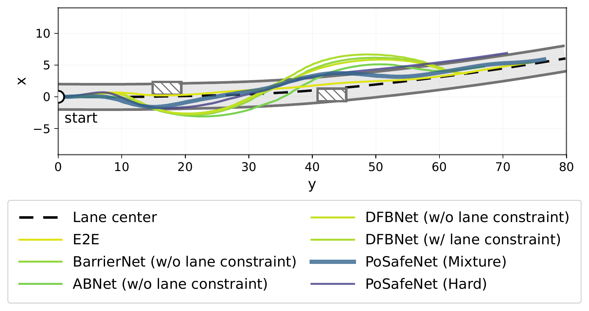
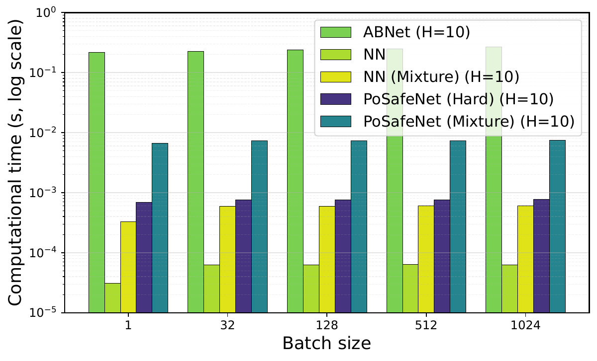
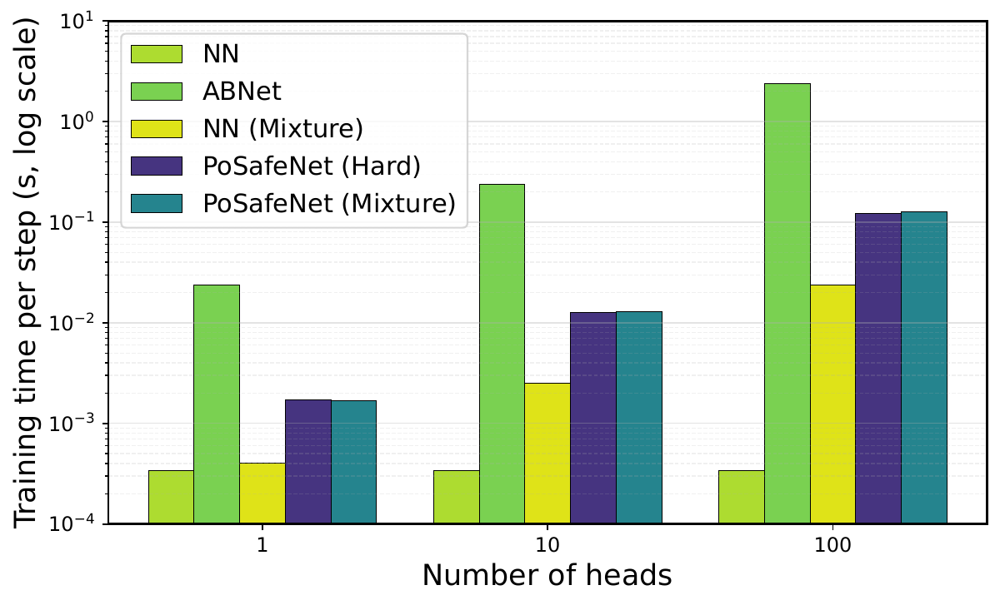

Figure 1. Overview of PoSafeNet.
Multiple neural projection heads execute different poset-consistent constraint orders. Outputs are combined through hard selection or convex mixture.
TL;DR
PoSafeNet treats multi-constraint safety as a structured composition problem. A designer-specified partial order defines admissible safety overrides, and differentiable closed-form projections realize these executions without solving an online QP.
01
Poset-structured safety
Explicitly represent priority relations while leaving incomparable constraints unranked.
02
Closed-form projections
Enforce CBF halfspaces sequentially instead of solving a joint optimization problem.
03
Multi-head learning
Learn nominal policies and safety gains with mixture or hard head selection.
04
Experimental validation
Evaluate navigation, manipulation and vision-based autonomous driving in simulation.
Abstract
Safe robot learning often involves multiple heterogeneous safety constraints that cannot always be satisfied simultaneously. Existing neural safety layers typically treat multi-constraint safety as a numerical optimization problem, enforcing all constraints through a single QP-based projection or relaxing conflicts with slack variables. This hides the semantic question of which constraints may be sacrificed under conflict inside solver geometry, penalty weights, or a fixed total hierarchy. We propose PoSafeNet, a poset-structured composable safety layer that makes these conflict semantics explicit. PoSafeNet encodes admissible safety override relations as a partial order and realizes each admissible execution by composing closed-form projections onto Control Barrier Function (CBF)-induced halfspaces. Across multi-obstacle navigation, constrained manipulation, and vision-based autonomous driving, PoSafeNet improves operational feasibility, computational efficiency, and task performance over Differentiable Quadratic Program (dQP)-based, slack-based, and hierarchical safety layers.
Motivation
Multiple safety constraints may conflict. The important question is not simply how to satisfy them simultaneously, but which constraints are allowed to override others.
Simultaneous enforcement
Joint QP layers can become infeasible under conflicting constraints. Slack variables restore feasibility but may relax important safety conditions.
Fixed total hierarchy
Hierarchical optimization assigns priorities to every constraint pair, even when no semantic priority relation exists.
Partial order (PoSafeNet)
A partial order encodes only necessary safety overrides. Different linear extensions define admissible executions.
How can we efficiently compose safety constraints when the underlying priority relations form a partial order rather than a fixed total hierarchy?
Method
1
CBF-induced halfspace projection
For a control-affine system, a CBF or HOCBF condition induces an affine inequality in control space:
Later projections can override earlier corrections. Therefore, the sequence determines the effective safety priority.
3
Poset-structured safety composition
Let \((\mathcal S,\preceq)\) be a safety poset. The relation \(i\prec j\) means that constraint \(j\) has strictly higher priority than constraint \(i\). A linear extension places \(i\) before \(j\).
Proposition 4.1 — Poset consistency
Sequential projection along any linear extension respects the poset's admissible override semantics. An earlier constraint may be overridden by a later higher-priority or incomparable constraint, but not by a strictly lower-priority comparable constraint.
Theorem 4.2 — Hard head selection
Selecting any individual head associated with a valid linear extension produces a poset-respecting safety execution without additional assumptions on the nominal policy.
Proposition 4.3 — Conditional mixture safety
A convex mixture preserves a halfspace when every participating head output satisfies that halfspace. Broader safety preservation requires additional non-interference or compatibility conditions.
Scope of the guarantee.
Poset-respecting safety is not equivalent to simultaneous satisfaction of all constraints. A later projection may invalidate an earlier one. Forward invariance requires the corresponding final CBF inequalities to hold along the trajectory.
4
Multi-head architecture and learning
Each head predicts a nominal control and applies sequential projection according to its associated linear extension:
Hard selection uses Gumbel-softmax relaxation for differentiable training and deterministic head selection during inference. CBF gains are learned jointly with the nominal policy. Gradients propagate through the closed-form projection operators.
Experimental Results
PoSafeNet is evaluated on three simulation benchmarks: multi-obstacle navigation, constrained two-link manipulation, and VISTA autonomous driving.
VISTA · Two-layer Mixture
68.78
Progress ± 5.66
VISTA · Four-layer Mixture
0.001
Time ratio out-of-lane ± 0.003
VISTA · Both PoSafeNet variants
0.00
Mean crash rate across evaluated seeds
EXPERIMENT 1 · TABLE 2
Multi-obstacle navigation
A unicycle navigates around three mutually incomparable circular obstacles under stochastic perturbations.
Figure 2. Representative trajectories for navigation and manipulation.
Method
Op. Feas.% ↑
Obstacle Safety (min)
Top Safety
FinalDist ↓
Rollout Time (s) ↓
Operational feasibility measures the availability of a valid safety-layer output, not the probability of completing the task without collisions. The source evaluates 24 test episodes and 100 stochastic rollouts.
EXPERIMENT 2 · TABLE 3
Safe manipulation under joint constraints
A two-link manipulator tracks a reference trajectory while respecting higher-priority joint safety constraints.
Method
Op. Feas.% ↑
φ-violation (max) ↓
Top Safety
Obstacle Safety (min) ↑
FinalDist ↓
Rollout Time (s) ↓
Both PoSafeNet variants achieve zero joint-limit violation and 100% operational feasibility in the reported benchmark. Mixture achieves lower final distance, while Hard has lower rollout time.
EXPERIMENT 3 · TABLE 4
Vision-based end-to-end autonomous driving
In VISTA, the nominal policy maps RGB camera images to controls. The CBF safety layer, however, uses simulator ground-truth state, obstacle positions, and lane geometry.
The driving experiment evaluates a two-layer hierarchy and a four-layer hierarchy. Values are mean ± standard deviation over four seeds {0, 1, 2, 42}.
Method
Obstacle Safety (min) ≥ 0
Crash ↓
Lane Margin (min) ↑
Time Ratio Out-of-Lane ↓
Progress ↑
|ey| (mean) ↓
Crash is reported as a fraction, not a percentage. A negative barrier margin indicates a constraint violation. The zero-crash outcome does not by itself imply a nonnegative barrier margin.

Figure 3. Representative VISTA closed-loop trajectories from the latest manuscript.
Safety–performance trade-off
In the two-layer setting, PoSafeNet Mixture achieves progress of 68.78 ± 5.66 with an out-of-lane time ratio of 0.062 ± 0.038.
In the four-layer setting, Mixture reduces this ratio to 0.001 ± 0.003 and decreases mean lateral deviation to 0.47 ± 0.02, while mean progress becomes 61.61 ± 0.17.
Hard selection yields higher mean progress in both settings, but also higher time-out-of-lane ratios. These aggregate results illustrate a trade-off and do not establish statistically reliable cross-seed superiority among all PoSafeNet configurations.
PoSafeNet Mixture · Four-layer
PoSafeNet Hard · Four-layer
APPENDIX A · FIGURE 4
Computational efficiency
PoSafeNet avoids a differentiable QP solver. With three active CBF constraints, the benchmarks show lower computation overhead than the evaluated ABNet QP implementation.

Inference time versus batch size, H = 10.

Training time per step versus instantiated head count, B = 128.
The benchmark studies scaling in instantiated heads, not the number of distinct linear extensions or the size of the safety poset.
Limitations & Guarantees
Sequential projection: A later constraint may invalidate an earlier constraint. Poset consistency alone does not guarantee simultaneous feasibility.
Convex mixture: Safety preservation requires compatibility or non-interference conditions.
Perception: VISTA uses simulator ground-truth state for the CBF layer, so fully vision-only safety is not established.
Manual specification: CBFs and poset relations are designer-defined, not automatically discovered.
Validation: Experiments are simulation-based; physical robot validation is not reported.
Citation
Provisional citation; update after the official NeurIPS proceedings BibTeX becomes available.
@inproceedings{wong2026posafenet,
title={PoSafeNet: Structured Safety Learning via Compositional Projection},
author={Wong, Kiwan and Xiao, Wei and Rus, Daniela},
booktitle={Advances in Neural Information Processing Systems},
year={2026}
}